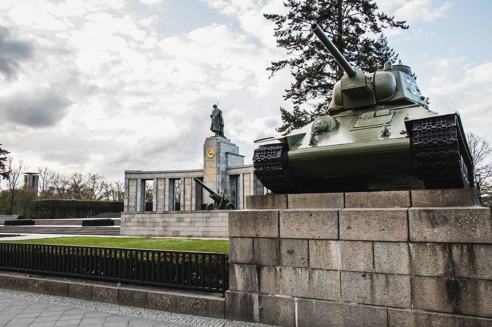
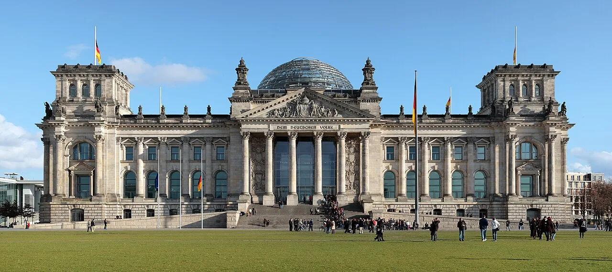
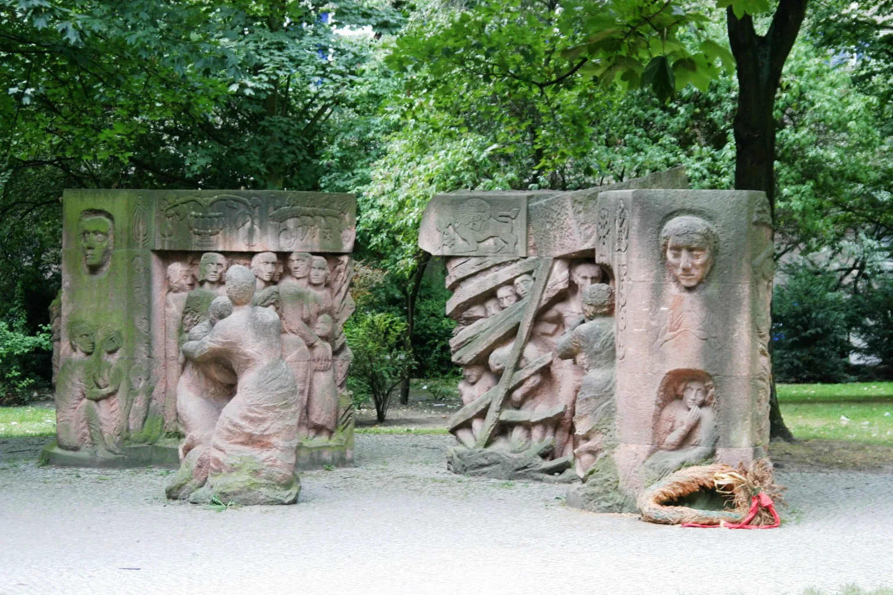
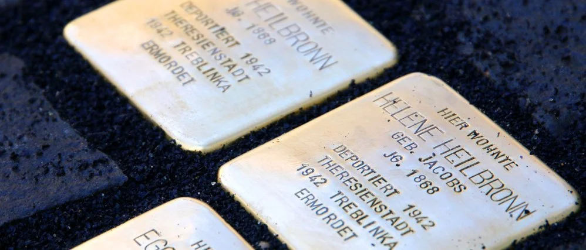
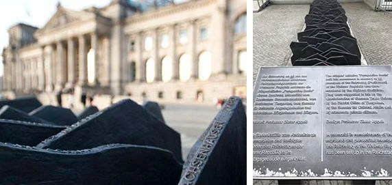

Nazism / Third Reich
A rigorous tour through the sites where the Nazi regime was forged
- Duration
- 3h 30min
- Schedule · Fri & Sat
- 10:00
- Price
€22€20

About this tour
If you want to understand the history of Nazism in Berlin in a deep, critical and contextualised way, this Third Reich tour is for you. We walk through the sites where the Nazi regime consolidated its power and analyse how its structures of power, propaganda and persecution actually worked.
During the tour we visit key sites in the historic centre: the March 18th Square, the Memorial to the Murdered Sinti and Roma, the iconic Reichstag Building, the Memorial to the Members of Parliament Murdered during the Weimar Republic, and the imposing Soviet War Memorial in Tiergarten. We finish in Berlin's historic Jewish Quarter — an essential space for understanding Jewish life before Nazism, the persecution, and how that memory lives on today.
This historical tour in Berlin is not just a timeline of World War II. My approach aims to explain how Nazism managed to consolidate itself politically, what role ideology played, and how it impacted German and European society. We analyse the context of the Weimar Republic, Hitler's rise to power, and the consequences of the regime.
In my tour I combine practical experience with an academic background in public policy. During my degree in International Studies I researched the ideological construction of Nazism and its relationship with the State and society. If you'd like to go deeper, you can read one of my academic papers here: 👉 tinyurl.com/2w59temj
This Third Reich tour in Berlin is designed for travellers interested in history, memory and European politics. A rigorous, thoughtful and accessible experience to understand how Berlin confronts its Nazi past — and why it remains relevant today.
What will we visit?
March 18th Square
The starting point in the historic heart of Berlin
Memorial to the Murdered Sinti and Roma
Memorial to the Romani victims of the Holocaust
Reichstag Building
The German parliament and a key site in the Nazi rise to power

Memorial to the Murdered Members of Parliament
Tribute to the parliamentarians who fell victim to the regime
Soviet War Memorial in Tiergarten
Erected by the USSR in 1945 in the heart of Berlin
Jewish Quarter
History and memory of Berlin's Jewish community

Tour gallery


Meeting point
Brandenburg Gate, south side.
Schedule
10:00
Rules
Groups of more than 6 people are not accepted. Larger groups must book a private tour.
Reviews for this tour
"Very good tour of Berlin learning about the history of the Nazis, politics and the memorials. Juan was very knowledgeable and sensitive to the history"
"We loved the Third Reich Tour we did with Juan! Such a knowledgeable and passionate guide, we learned so much and loved our experience. Highly reccomend!"
Frequently asked questions
Do we visit any museums or interiors?
The tour is mainly outdoors, visiting the actual places where events took place. We visit sites like the Topography of Terror (open-air exhibition), the Führerbunker, and other historical points in central Berlin.
How much does the Third Reich tour cost?
The tour is priced at €20 per person. It includes 3 hours and 30 minutes of guided walking with a certified official guide. You can book online quickly.
What places are visited on the tour?
We visit the Führerbunker, the Topography of Terror, the former Reich Air Ministry, the Jewish Quarter, the New Synagogue, Bebelplatz (where the book burning took place), and other key sites of Nazi Berlin.
Does the tour cover sensitive topics?
Yes. The tour addresses the Holocaust, Nazi persecution, and the crimes of the Third Reich with the utmost respect for the victims and historical accuracy. Guide Juan Berliner is a certified professional who handles these topics with the seriousness and sensitivity they deserve.